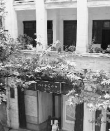

八七会议

八七会议是第一次国内革命战争失败以后，在关系党和革命事业前途和命运的关键时刻，中共中央政治局于1927年8月7日在汉口召开的紧急会议。会议批判和纠正了陈独秀右倾机会主义错误，撤消了他在党内的职务，选出了新的临时中央政治局，确定了土地革命和武装斗争的总方针。毛泽东出席了这次会议，并提出了著名的“枪杆子里出政权”的论断，八七会议后，毛泽东受中共中央委派，以中共中央特派员的身份前往长沙，领导湘赣边界的秋收起义。会议通过了《中国共产党中央执行委员会告全党党员书》等议案。八七会议在中国革命紧急关头及时地向党和全国人民指明了斗争方向，反对政治上的“右”倾机会主义，使党在革命中前进了一大步。
这次会议具有重要的历史地位，毛泽东提出了“枪杆子里出政权”的著名思想。给正处于思想混乱和组织涣散的中国共产党指明了新的出路，为挽救党和革命作出了巨大贡献。